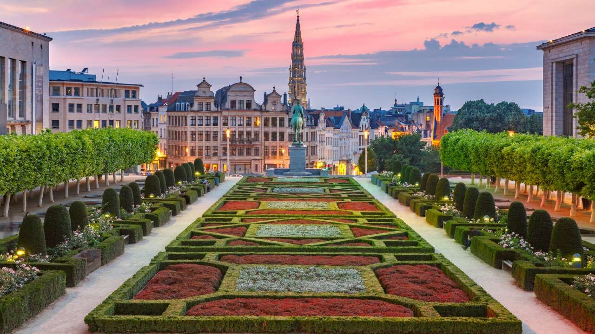
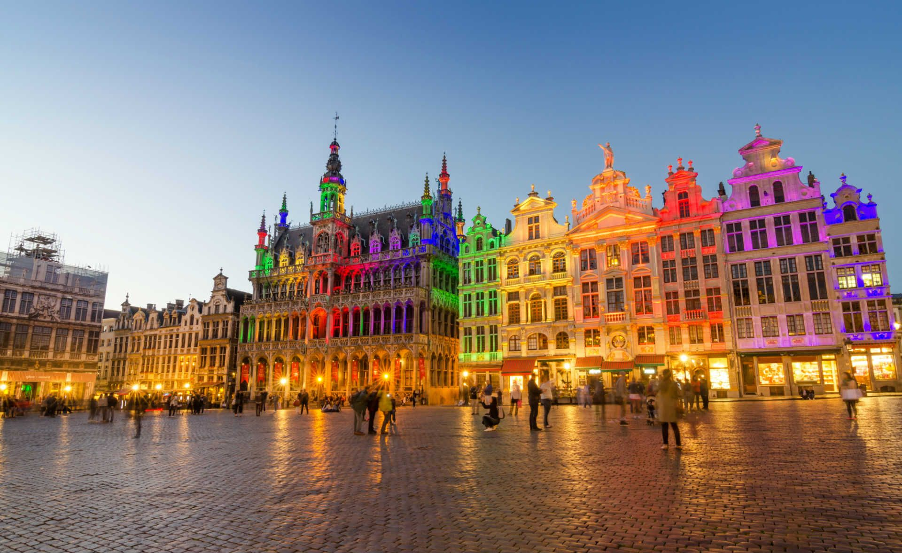
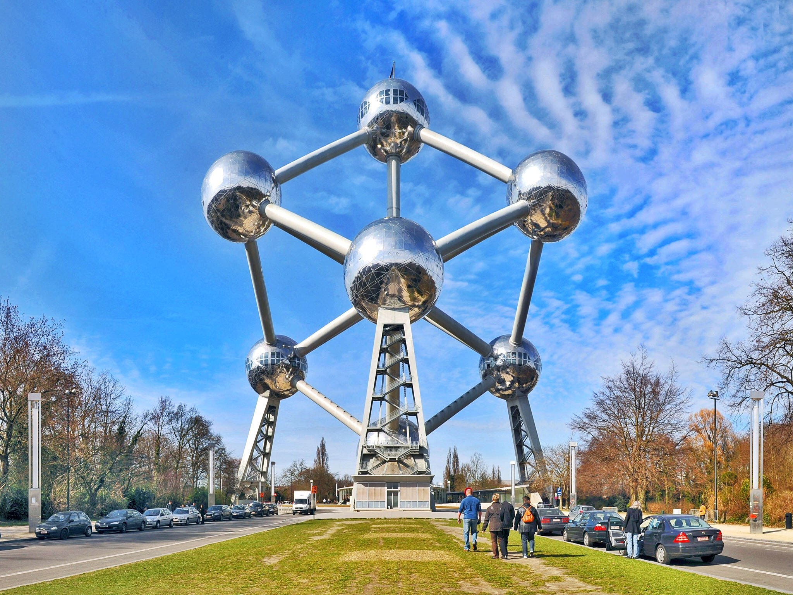
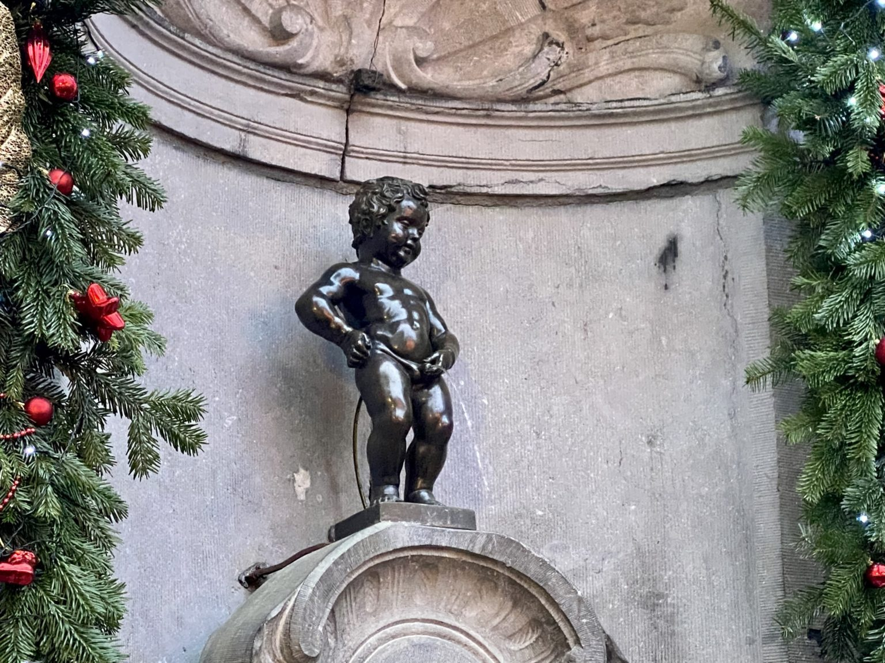

He decidido hacer esta guía porque el curso que viene pasaré un año estudiando y trabajando en Bélgica. Si planeas visitar pronto Bruselas o te interesa conocer más sobre esta fascinante ciudad, ¡estás en el sitio correcto!
Si vas a Bruselas como estudiante, como yo, te recomiendo que le eches un vistazo a la sección: Guía para estudiantes.
¿Por dónde empiezo?
Hay mucho de lo que hablar, pero empecemos por lo imprescindible:

🏛️ Lugares para visitar
Bruselas es una ciudad llena de historia y cultura. Algunos de los lugares más emblemáticos que no te puedes perder son:
La Grand Place

El Atomium

El Manneken Pis

Para conocer más sobre estos y otros lugares a visitar, dirígete a la sección: ¿Qué visitar?
🍽️ Gastronomía
La comida belga es conocida por sus deliciosos chocolates, gofres y cervezas. Algunos platos típicos que debes probar son:
Los mejillones con patatas fritas
El estofado de carne flamenco
Los gofres
Para conocer más sobre qué comer y dónde comer, tenemos preparada esta sección: ¿Qué (y dónde) comer?
🚆 Transporte
Para moverte por Bruselas, te recomendamos utilizar el transporte público, que es rápido y eficiente. Sin embargo, ¡tienes muchas otras opciones!
Metro y autobús
Bicicleta
Carsharing
Para poder comparar precios y ver todas las opciones que hay en la ciudad, haz click en el siguiente enlace: ¿Cómo desplazarse?
💡 Consejos
A continuación, te contamos algunos consejos útiles cuando viajes a Bruselas, tanto si planeas quedarte unos días como si te quedas una temporada (como yo).
Llevar ropa de abrigo, ya que el clima en Bruselas es frío y húmedo
Probar la cerveza belga, que es una de las mejores del mundo
Visitar el Museo del Cómic, que es una de las atracciones más populares de la ciudad
Para más consejos y recomendaciones, visita la sección: Otros consejos
💭 ¿Tienes alguna sugerencia?
Si has estado en Bruselas y quieres hacernos llegar alguna recomendación o experiencia que pueda ser interesante, ¡no dudes en escribirnos! Rellena este formulario con todo lo que nos quieras contar.